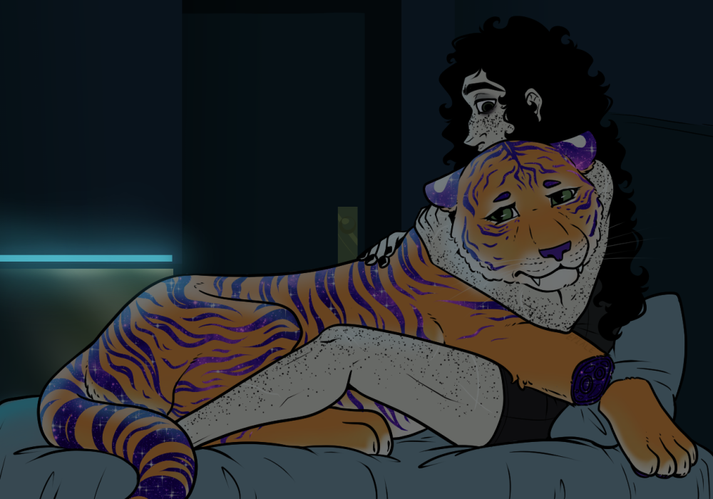
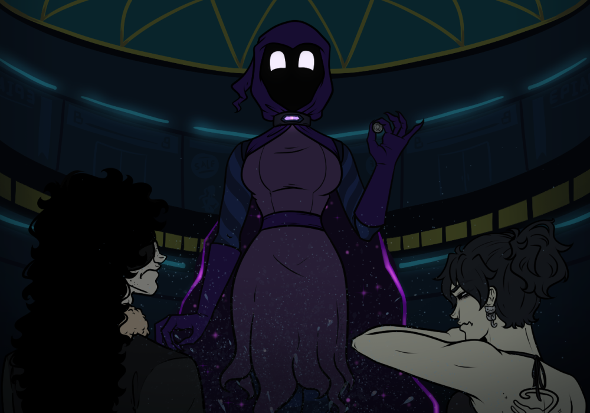
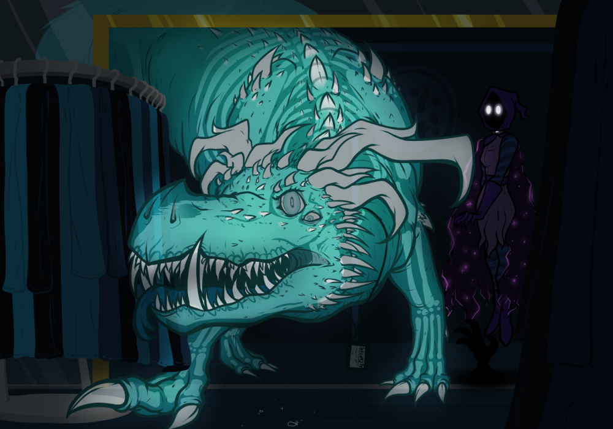

This place, she’d been here before. Was this Carcosa? No, no it couldn’t have been. Carcosa’s sky, barren trees, and the majority of its landscape were shades of sickly yellow, only broken up by the black stars and black city. But this? She looked around the cold cyan around her, entrapping her. She tried to call out, screaming at the top of her lungs for Mal, for anyone, but no sound escaped, just like before. Her nails dug into her flesh as she retreated into herself, looking around wildly for any sign of life. A misstep. A rock slid under her heel, causing her to stagger and she tumbled over a lone monument made out of cut black stone. Her back and knees protested as she lay on the rough ground. It had been years since she hadn’t been able to catch herself from a fall and to her annoyance hot tears were now running down her face.
Great.
She pushed herself up to examine the marker, wind whipping silently around her as if to push her over yet again. The marker was adorned with a single name, Frances Davis.
Great. Fucking great.
Fran was so fucking tired of all this cryptic otherworld bullshit.
“Babe.”
It wasn’t fair! Yeah the terminal had ghosts, but to trap people? Into a stupid vague job of all things too. Why was she in this spot again? It wasn’t fair! She was so close to having a semi-normal life again.
“Fran, babe wake up.”
Fran roared as loud as she could, leaping onto her feet, and snarling. She looked around for the offending gravestone, but everything was much darker now, with only faint cyan emergency lighting illuminating the area. An arm snaked around her neck, and she flinched away, hissing. Mal sat in front of her, concern written on his face. Fran tried to speak, to apologize, but all that came out were deep meowing sounds. She realized that she must have transformed at some point without noticing. Mal reached out, and wrapped his arms around her neck again, undeterred by the dangers of hugging a large cat, let alone a spooked large cat.

Mal sat there with her quietly as Fran worked to calm herself down enough to force her bones and organs to shift back into a human shape. It had been a very unproductive few days. Several people had blamed Cain for this incident, including Fran herself; though, she couldn’t help but pity the man as she had once been in a position of entrapping people in inescapable places. She planned on mauling his ass once she and Mal got out of this god’s forsaken building though.
The terminal used to be some sort of interdimensional hub for traveling to different worlds, which explained all the weird people and dragons, though the world travelling part seemed to be out of order thanks to some accident. Thankfully there was a hotel to stay in with running water, and while most electrical utilities seemed to be non functioning, there was emergency power for low lights and hotel doors. Plus there were also cafés and stores all suspiciously untouched by the ravages of time.
No one had made headway into the exorcism. People had tried. While some had been too panicked to make much of an attempt, enough of the people remaining in the terminal had made a genuine effort it was starting to seem like the task was well beyond anything anyone could handle. The ghosts they’d come across were persistent, unfazed by magic, religion, or electronic ghost hunting equipment.
Mal’s initial attempt to either break through the wall or uncover some hidden hologram system had just resulted in a dirtied wall, and a very frustrated Mal. Fran’s attempts to use her own ghost hunting equipment resulted in a whole lot of nothing. The EMF reader didn’t pick up a thing. Neither did her DOTs machine, or spirit box, or her infrared camera, or anything else they tried. She’d even run through the depths of her memory looking for a spell to maybe help, but the apparitions continued on as if nothing had happened at all.
Mal and Fran claimed a hotel room that was far away from the other contractors once they accepted, for the moment at least, that they were stuck. Still, they kept their bags mostly unpacked and near the door in case they could make a quick escape. The room itself wasn't made for long term stay; a bed, bathroom and a frustratingly unbreakable window that taunted them with a view of the courtyard below. Not that the courtyard showed anything with the combination of heavy snow and lack of lights.
Mal didn't say everything was going to be okay or that things would work out because he didn't know if they would or not, and lying didn’t seem like it would help anything. Instead he squeezed Fran’s hand, “I'm here.” She looked at him before slowly blinking and looking away.
“It's just, unfair,” Fran snarled, “This was supposed to be a vacation! And… god-” she ran clawed hands through her hair, fighting back tears “I can't put my family though this shit again, or your dad, or- Fuck. Brian is on tour, he wouldn't even think something was wrong.” A fellow freed cult leader and current rising Broadway star, Brian was the third in Fran’s and Mal’s relationship.
“We will find whoever is behind this, and I will kill them. Then we can go home, or to Paris.” Mal gave Fran’s knee a squeeze. “Wherever you want.”
The more they explored, the more Mal wondered what exactly they’d gotten themselves into. He’d been in stupid situations before, gotten himself trapped in a cave for a week once somewhere in South America, but getting stuck in a manmade structure he couldn’t somehow claw his way out of was new.
He’d been mentally rejecting the concept that they were actually, truly stuck, but seeing Fran so upset, and realizing he couldn’t come up with a single solution had driven the point home. He wanted to get her out so badly, felt awful that they were here at all. He should have called it when he realized the ad they got was touched with magic bullshit, should have just booked them a room at that hotel they made a horror movie about, and called it a day. It was still a fake ghost scam, but at least it was a decently provably safe one.
He supposed maybe in some small way they’d gotten lucky? A good chunk of the people they’d entered the building with had vanished after that windy cyan “spirit” finished its villain speech. It had been eerie, a trick he couldn’t figure out. Some people thought they’d been lucky, kicked out of the terminal. Fran seemed to believe they were all dead or sent to another dimension, and would soon be dead. Mal was pretty sure it was easier to make people disappear if you weren’t worried about keeping them alive, and was heavily inclined to agree with her.
He tried to remind himself this was, ultimately, something built by people. There was no such thing as an inescapable structure. They’d find a way out. He always weasled himself out of the stupid situations he got himself into. He just needed time to piece this one together.
They just had to survive long enough to find a way out.
And a pretty good first step was resource gathering. The Terminal’s facilities were immaculate, suspiciously immaculate, Mal would point out, clearly too well preserved to have been shut down as long ago as they said it had been- but there was no guarantee that supplies were endless, and they had no way of knowing how long they’d be trapped here. He wasn’t worried about competition for resources, he knew he and Fran together could probably win in a fight against anyone here, but they didn’t want to be stuck searching for basics like toiletries, food, and bedding on and off forever.
So they walked the dimly lit halls, kept an ear out for any odd knock or moan or ghostly whisper. The place was obnoxiously big, and with the lights so dim it wasn’t exactly easy to navigate either. Fran read the signs and information boards to Mal, her irises wide to take in as much light as possible. They’d found a few facilities that weren’t particularly helpful, a customs office and a baggage claim, what appeared to be a daycare wedged next to the hotel they’d taken up residence in and a post office. They’d even run into a spa that Mal couldn’t imagine trying to relax in as figures shifted in the shadows.
Fran seemed to perk up when they came to a mall, and Mal was happy enough to follow her in. Maybe they’d have a food court where he could scrounge up something half decent to eat-
It took all of a few minutes to run into a stall selling hair care products.
Mal instinctively walked a bit faster, pulling Fran along by the hand as he did so. A spectral form jumped from the stall to block their way before they could pass, landing inches from his face. It got out about half a loud ‘Hello!’ before Mal tried to shove it away on reflex.
Nothing happened, of course. Mal felt nothing against his hand, and when he pulled it back the ghostly form simply reformed in wispy strands, weaving together back into a perfectly normal face, fake smile stretching from ear to ear.
“Oh ho ho! My apologies, I didn’t mean to startle you,” the spirit immediately began, speaking with all the passion of an infomercial, and at a speed that left little room for interruption, ”Why I was just so excited to see a customer-”
“We aren’t customers,” Mal said flatly even as the ghost continued talking, uninterrupted.
“-well I just had to jump out to speak to you!”
Fran frowned, tugged Mal forward, ”Just ignore him, if you respond at all he’ll just keep going.”
Mal walked straight through the ghost, and tried to ignore the nasty chill that hit for a second as he did so. He vaguely wondered what they were using to make these things that would cause cold like that. Maybe some new hologram technology? Possibly some clever use of gas to create the effect, maybe CO2, or super chilled nitrogen- Either way the spirit was undeterred, floating right up against Mal’s side.
“Why, I can’t believe the amount of hair you have! Such a nice curl, and so long too. It’s such a shame to see it left so,” there was a split second pause as the sale’s ghost searched for a word, ”unctuous! Why, we have an amazing product here, perfectly balances healthy moisture and a clean softness-”
Mal ignored the spirit. He wanted to scan the booth to maybe see if he could find a projector or something, but looking anywhere near the product itself would probably only encourage it. Instead he turned to Fran.
“This has to be some extreme sales scam, like the psycho’s version of one of those pyramid scheme parties where they try to pressure you into buying things by trapping you for a few hours through social pressure. Some eldritch monster is trying to make a quick buck,” he turned to face the spirit still rattling off a sales pitch at his side, ”Hey, let me guess, if we buy enough of your crap it’ll ‘complete your earthly work’ or something, and you’ll be ‘exorcised’, thus getting us to go spend a bunch of money here to try to get out?”
The spirit actually stopped, looked genuinely confused as it blinked at Mal, then plastered that smile right back on, ”Oh I’m afraid that isn’t how that works at all.”
Mal seemed to think for a moment, accepted his guess was wrong, shrugged, and turned to keep walking with Fran, ignoring the spirit’s further attempts to pitch his product.
Unfortunately the first sales ghost wasn’t alone. Another booth selling questionable piercing jewelry was still being manned well into the afterlife, as was the booth selling phone charms, and the one selling mugs and mousepads with your own face on them. Fran caught sight of the mall’s atrium well before Mal did with her cat-like ability to see in the dark, and raced for it, Mal following close behind. The ghostly wails of “-the best deal you’ll find!” and “Makes the perfect gift-” echoed behind them, but soon faded to a faint call or two, then simply silence, broken only by the sound of their shoes against dark marbled tiles.
The booths didn’t extend to the atrium. A wide room with a high ceiling surrounded by the rim of an upper floor, and escalators to travel there, it was clearly something of a central hub, further wings branching off at the sides. There were benches, and a few tables to sit at near what was once a cafe of some kind, plenty of faux vegetation in large stone planters, and space probably meant for seasonal setups, now empty and unused.
Fran glanced back at where they’d come from, rolled her eyes. What kind of ghost decided to spend their eternity selling cheap garbage? At least it didn’t seem any had followed them. She slowed as she glanced around the room, walked further in.
It was a largely pristine space, aside from an odd splash of red script on the wall.
The words were scrawled in messy, hurried letters, clearly drawn on in a rush, big enough to take up the entire exposed wall section between two shop windows.
Fran paused a moment in front of the graffiti, Mal stepping closer trying to get a good look in the dim lighting.
Mal shook his head, ”It’s the kind of thing you see in those haunted houses they open around Halloween. It’s a set piece.”
Fran crossed her arms, ”Normally those would say something like ‘get out’ or ‘death awaits.’ We also haven’t really seen traditional horror decorations anywhere.”
Mal stared a moment, ”Maybe an employee did it? I mean, I still don’t think these are ghosts. Maybe the projections are actors who aren’t being treated very well? Or someone else got stuck here before us, and was worried about being presumed dead by rescuers…”
He could see the thought that other people might have been stuck here long enough to worry about dying was bothering Fran, and dropped the subject. He sucked at most social cues, but the catlike nervous behavior was a bit easier to pick up on. Instead he turned fully away from the wall.
“It’s surprisingly clean here considering there’s stagnant water. No mold or anything.”
Fran followed his gaze, walked further into the room, away from the graffiti’d wall.
“Did you ever just hang out at a mall, Mal?” Fran asked, as she looked over a fountain whose water stood still. “I remember getting kicked out for taking money from the water fountain once, they threatened to call my folks, but my sis saved my ass.” Something seemed to shift under the water, or was it just the lights?
“We only really drove out to malls around the holidays,” Mal shrugged, ”Lived too far out to go regularly. It’s kinda weird being in one without Christmas decorations everywhere.”
“Ugh, Christmas time is the worst to visit. Wicked busy,” Fran complained jovially as she dug through her pocket, and pulled out a coin. “Pretty sure this is a scam but it couldn't hurt.” She tossed the dime in with a flick of her thumb. “Now should we- shit!”

The waters stirred as a form exploded out from the tile, showering the couple with mist. She was hooded in a purple cloak that had a choker adorned with a purple gem. White lights where eyes would be stared, and a shadowy hand creeped out from under the cloak, holding the coin. “What's this? Why did you throw it away?” She asked in a slightly excited, friendly tone.
“That’s a dime, people throw coins in fountains to make wishes,” Mal answered, eyeing the shade wearily. ”We aren’t buying anything, you can save the sales pitch.”
The shade tilted her head to the side like a confused puppy, ”Sales pitch?”
Fran shook to rid herself of the water droplets. “What the fuck was that? Who are you?”
The shade’s eyes squinted upwards in a smile “I’m Nephala! That was my magic, I’m a shade, or shadow, or ghost… I don’t really know what I am.” She hovered over towards the couple, and turned around towards the fountain.
“Figuring that out is my wish.” Nephala said, throwing the dime back into the fountain with more force than necessary. “What was yours?”
Fran blinked, “Uh, I don’t think you are supposed to tell people… but mine was to escape.”
“Oh no, why not?” Nephala looked mildly distressed.
“It doesn’t matter if you say it or not, it’s just something malls do to get a little bit of extra money,” Mal explained, examining Nephala curiously. “You don’t seem like the other ‘ghosts’ in here.”
Fran also examined Nephala; she could float, show up out of nothing, and had a deep affinity for purple. The longer Fran examined the more she was drawn to the gemstone, and the cloak whose lining was like looking into the depths of the universe itself. Nephala was reminiscent of the entity who had given Fran her abilities, and had also trapped her on an island for a decade, the King in Yellow. Was Nephala an elder god? The Queen in Purple? Was there a Queen in Purple? Or was she just a poor transformed soul still going through some stuff?
“And this is Frances, my girlfriend.” Mal waved towards Fran, breaking her out of her thoughts.
“You can just call me Fran.” Fran stated.
Nephala cooed “Oh! You can do that? Be called by a shorter version of your name? Can I be Neph?”
“If you want.” Fran shrugged.
Nephala followed along as the couple helped themselves to empty stores, asking questions all the while. Mal was happy to answer whatever came to Nephala’s mind, while Fran mostly just listened.
“Why don’t you think the ghosts are real?”
Mal shrugged, “It just doesn’t make sense that people would somehow stick around after dying, and I mean, I see a lot of dead people and haven’t ever seen a ghost.”
Nephala nodded, that seemed to make enough sense, “So you don’t think I could be a ghost?”
“No. If I had to guess I’d think you were something like me and Fran, some kind of magic alien being… Maybe not with a human form, I don’t know, I didn’t know I could turn into a monster most of my life, maybe you just don’t know you can become a person-”
“Hang on.” Fran paused in front of an arts and crafts store “Lets check this out.”
Fran walked into the small space, Nephala following curiously behind. It was filled with various shelves of paper and pencils. Tubes of paint lined the walls, untouched and covered in a light layer of dust. Mal stood near the entrance, looking out over the empty walkways.
“This one makes noise.” Nephala stated, holding a can of spray paint in her hands.
Fran smiled at Nephala, “Yeah, you have to shake it up first to use it.”
Fran grabbed a can sporting a red cap. It felt lighter in her hand than she expected. Odd. She opened the cap, inspecting the nozzle in the low light. There were specks of red left over after a hasty cleaning. She looked over the other cans. They were covered in the dust like the other supplies, unused.
Nephala sprayed a line across an exposed bit of shelf, eyes crinkled in the enjoyment of a new novelty. Fran coughed and backed away from the fumes given off, causing Nephala to look over curiosity.
“You okay?” She asked, floating over.
“Yeah, it's fine. I tag stuff all the time, except recently...” Fran trailed off and shrugged.
“What made you stop?” Nephala asked.
Fran licked the back of her hand then arm. It wasn't something she had discussed with Mal or Brian, not yet. She had wanted to get her own thoughts in order first, but being trapped in this place threw a wrench in things. While Nephala wouldn't have any good advice, as naive as she was, it would be nice to practice telling someone.
“I think I'm pregnant.” Fran whispered, shrugging. “It's something I've wanted, something normal that I thought…” she sighed, words escaping her mind. It was all too melodramatic.
“Pregnant?” Nephala asked in her normal volume, which to Fran seemed to rip through the air.
Mal looked over, curious, concerned.
Shit.
Fran wiped her spit covered hands over her hair, speaking a bit too loudly “Yeah that's just a thing regular humans go though. Spray paint fumes aren't great for it. But-! I'm not regular though, I went through some stuff and can turn into a Cat of Saturn. You know, you might've been human once too, Neph.” She rambled and glanced at Mal who didn’t seem fooled. Fran held out the spent canister, "Anyways, I think this is what was used to make that message we saw earlier.”
Mal took the can of spray paint, still eyeing Fran with concern, but not bringing anything up.
Nephala fidgeted with questions. Why weren’t spray paint fumes good? What was a Cat of Saturn? Why would she have been human? Did humans normally groom themselves like cats? Would there ever be enough time to ask all the things she wanted to know about?
She decided to ask the question that could help the ghosts “Why would the paint be in the store instead of with whoever wrote it?”
“Didn't want to get caught with it,” Mal said, turning over the can in his hands, “Could be something in here to be scared of.”
“Yeah, the ghosts.” Fran teased.
“I think the ghosts are just lonely,” Nephala said. “That's why we are stuck inside.”
“Well whatever the reason, those fuckers better let us out soon, or I'll start thinking about going full cult leader again. Think I remember a spell or two.” Fran grinned. Mal just shook his head, an amused smile crossing his face, and entangled his hand in hers.
“Oh please, it looks like fun.” Nephala cooed as she stared into the store while Mal’s eye sparkled with unsaid desire.
“Ugh, fine.” Fran grumbled, giving a small smile “It really isn’t that big of a deal you know.” but the two of them were already off, looking at the variety of stuffed animal skins they could turn into a new toy.
This store was more active than the others with various stuffed animals being dressed and undressed on loop, skins being picked up and put down, and the giant machine in the middle of the store still throwing fluff around inside of its glass container despite the lack of power.
“Is this creature friendly to humans?” Nephala asked, holding up a skin.
“Yes, dogs are great.” Mal smiled.
“No, that’s a bear and bears in the wild can mess you up wicked bad.” Fran interjected.
Nephala looked at the black bear she held and stared at it quietly for a moment. “Oh… like how the villagers treat me, they always tell others to stay away.” Her shoulders slumped.
“Erm…” Fran licked the back of her hand then grabbed a tiger plush, “These are dangerous in the wild too, but people like them. Maybe whatever you are is dangerous to humans, and they just haven’t understood your appeal yet.”
“All animals are good animals!” Mal said, holding two different plushie skins and walking towards the filling station.
In several bins surrounding the fluff machine were various add-ons. Scented sachets, small noise machines, little bows to adorn a plush ear, or tail. Mal was already digging through them, when the other two made their way over.
“What is this?” Nephala asked.
“Little things you can add, like sounds, smells,” Mal trailed off, a promotional bandana with ‘Bifrost Terminal Traveler’ written across the front held in his hand, ”Tourist trinkets.”
“What is smell?” Neph asked as she looked over the various sachets on display.
“It’s like uh…” Fran had no clue what to say.
“It’s a sense, like vision or hearing. Many animals, humans included, have some body part, like a nose, that can pick up on chemicals in the air, and interprets those as a smell. Some things, like these little plastic bits, have a smell people find enjoyable,” Mal said, saving Fran.
Neph blinked, “Oh, I don’t have a nose so I guess I can’t smell. I would like this one though.” She grabbed a package that had an image of purple flowers on them, lavender. “It’s purple, like me. So that must mean it smells good right?”
Fran shrugged, “Good of a reason as any.” She grabbed the same while Mal debated on noises to add to his animals. He chose meows for his dog and dinosaur roars for his tiger.
A ghostly employee was perfectly content to fill their stuffed animals for them, and decisions on how to dress the bear went about the same as picking out its smell. Purples mostly with disregard to any sort of fashion cohesion. Fran supposed someone that had been on the outskirts their whole life like Neph wouldn’t have any preconceived ideas of what looks good or not.
After they finished, they walked towards the door, new toys in hand. “Hey! You have to… pay…” The assistant ghost huffed, still tossing the fluff in an attempt for the store to look open.
Fran continued onwards, “Just ignore them. It’s not like they are alive.”
Neph followed the couple out of the store and down the corridor, “They seem upset, maybe we should go check if this is okay.”
Before Fran could reply, a ghostly hand grabbed her and Mal’s shoulders, “You're going to have to come with us.”
They turned to see an older spirit dressed in a security uniform, face stern, tired, ”I saw you three leave that store without paying. We don’t tolerate shoplifters here.”
Nephala seemed confused, ”Without paying? Is that something we need to do-”
Fran glared at him, lip curled back in the beginnings of a snarl as she jerked her shoulder out of his grasp, ”Shoplifting from an abandoned store, in a building we’re trapped in? How about the kidnapping us-”
The spirit glared, wagging a finger Fran’s way like he was chastising a child, ”I don’t know about any kidnapping, but I do have eyes, and know a thief when I see one.”
Neph’s eyes took on a concerned turn, ”Oh, no, we didn’t want to cause any problems.”
Mal rolled his eye, dug in his pocket before pulling out his wallet. He held out a handful of cash that would have more than covered whatever the plush toys they’d taken were worth, ”Here, just take it, and go ‘haunt’ someone else-”
The security ghost shook his head, ”Tsk- The terminal only deals in TITAN Credits, and even if you did have the right currency it doesn’t change the fact you stole-”
“Okay, then,” Mal shrugged, shoving his money back in his pocket before grabbing Fran’s hand and turning to completely ignore the ghost, ”Be mad about it, it’s not our problem. Come on Neph-”
The spirit sighed, pulled out a radio just as spectral as he was, and turned it on with a shrill static beep, ”I’m gonna need backup here, got a couple of shoplifters making a run for it.”
They were hardly running, if anything walking fairly slowly as Neph glanced back and forth between the couple, and the security officer. She was hesitant, but ultimately followed along beside Mal and Fran.
“Did we do something wrong?”
“No,” Fran replied, ”Well, maybe, if this was a real store you are supposed to pay, but this is an abandoned building full of ghosts, I don’t think taking anything here counts.”
“And it’s hardly a worse crime than locking a bunch of people inside a building against their will,” Mal tacked on, slowing down a bit as he thought he heard something moving much further down the wing of the mall.
Fran picked up on the sound too, slowing to a stop as all three turned to look down the long, dark corridor behind them.
Something was off.
It had been quiet in here from the start, but now even the faint murmur of sales ghosts was completely absent. Nothing jumped out of the stall at their side, and the few shadowy figures Fran could make out in the proper stores stood well back away from the glass fronts as they looked out, almost like they were too nervous to get any closer. Even the original security ghost was gone, leaving a black, empty void.
Except for the sound. It was so faint at first, the scratching of something hard against the tiled floor. It echoed strangely, like the sound was having to travel through a wall before reaching them, but as it grew closer it became clear that whatever was causing it was very much in the same space they were.
Fran caught sight of it first, vision actually able to cut through the dark. It wasn’t immediately clear what it was. She could just make out a mess of limbs, made all the more confusing by the fact whatever it was was somewhat translucent. An effect seemed to fade in and out as it moved, creating an odd overlap view of the beast’s entire body, organs and all. Any details on the head were nearly impossible to make out, too muddled in layers of visual noise. But the outline of the thing’s hulking form scraping against the walls as it moved made it clear that this one wasn’t like the other spirits they’d seen.
She could just barely make out the reflection of a silver badge secured around the creature's long, serpentine neck, a little shield inlaid with the word ‘SECURITY.’
She cursed under her breath. Mal and Neph turned to follow her gaze and started to see it too as it barreled towards them. Neph seemed more intrigued than worried, taking a step forward to get a better look even as it drew closer.
“Oh, is that a dragon?”
If it was, it wasn't quite so charmingly graceful and genial as the dragons in town had been, all muscle, and scattered uneven horns, barreling forward like an enraged bull. Mal braced for a fight out of habit, but felt almost silly for it. After all, he'd walked right through several of these things. It wasn’t like it could actually hurt-
Security lunged forward in a flash, and slammed a clawed hand into Mal with enough force to send him flying clean through a nearby store’s window. Fran’s flesh twisted in a flash of cracking bone as she transformed her limbs into those of a Cat of Saturn, launching herself at the beast- only to phase right through it, claws scraping along tile as she landed on the other side. As she turned to look in confusion the creature's tail whipped to the side. She dodged, jumping up enough to avoid the brunt of the attack, but clipping a paw against spines enough to understand it was solid. She would have been hit if it were not for her quick reflexes.
How was that fair? It could choose to hit them, or be completely intangible? What a load of bullshit-
Nephala wanted to check to see if Mal and Fran were okay, but Security quickly turned its attention to her. A great head split to reveal a mouth lined in rows of jagged teeth, and she ducked into the shadows when it lunged towards her. A clack of teeth against the floor echoed through to her in a hazy clatter, indistinct through the shadow veil, and its own vaguely corporeal nature.
This wasn’t good. Whatever Security was, it was attacking them, and had likely already hurt Mal pretty badly. She didn’t think people did well getting thrown through windows. Nephala reached out, and the shadows moved with her as easily as her own limbs, spreading forward towards the creature. Even as it seemed to shift back into a ghostly state the shadows could still interact with it, intangible darkness able to redirect the intangible dragon. She made a quick motion, and a great dark hand grabbed the creature by the snout in a flash of darkness, still a struggle to hold, moving with a fluidity that was difficult to fully keep a grasp on.
A black reeking mass erupted from the shattered storefront, gliding clean through the spirit before being dragged back, as Mal stumbled out of the store. He’d thrown off his jacket, leaving him in the sleeveless shirt he wore underneath. An arm had melted, writhing sludge riddled with diseased bloodshot eyes, and grinding teeth. It recoiled back, fading gradually back into a human shape as he tried to shake out the glass shards from his person with the other. His expression read as confused more than particularly pained despite the shards in his hair, and several cuts along his pants and legs underneath.
“What the fuck?”
Nephala emerged from her shadowy hiding spot, as Fran circled around to join them, her head and torso transformed back to allow for speech while leaving her limbs as muscular paws.
“We should try to get away from it before it gets out of whatever you’re using to hold it,” She said, voice deep and rumbling.
With each whip of Security’s head, Neph’s hold loosened the slightest bit. The nearby displays shook with the force of the creature’s thrashing. It would probably be getting out sooner than later.
Mal didn’t need to be told to follow when Fran ran, though he did grab Neph’s arm as he did, dragging her along as well.
“Why couldn’t you hit it just then? It seemed to hit you just fine,” she asked, continuing to glance behind them even as she followed along well enough that Mal felt okay letting go of her.
“No idea, but it’s not good,” Fran yelled behind her as she turned a corner, eyes darting between possible escape routes.
There were options. Fighting didn’t seem like it would work, but they could run or hide. They run far enough away that Neph’s grasp on her shadowy hold snapped. As a roar echoed through the empty mall, Fran opted for hiding, ducking into a nearby clothing store. Mal and Neph followed close behind.
Fran dragged Mal along to the back, knowing he’d be functionally blind with rows of shirts, and pants largely covering what little emergency lighting there was, and Mal had started to drag Neph along as well. She’d planned to hide in a changing room, but settled for ducking into a round rack of thick jackets when the sound of an angry beast got a bit too close for comfort.
It was a tight squeeze to not have someone sticking out, one made mercifully doable when Neph sunk into the nearby shadow.
Fran tried to still the jackets they’d just pushed through as the clack of claws echoed out from the doorway. There was a huff, the snort of an annoyed animal, and then the gentle rustle of clothes as Security stepped into the store. For the first time in her life she almost wished there was some obnoxious shopping music playing over the speakers as her own hushed breaths, her own racing heartbeat sounded unbearably loud in the silence that fell over the store.
Mal pulled her in just the slightest bit when the silence was cut by yet another clack of claws as it moved closer.
Neph, shifting through the shadows to get a better look, had the thought that the monster chasing them couldn’t actually see all that well in here. It craned its winding neck at awkward angles, seemed to lean in and squint as it searched behind the counter, slithered to check between racks of clothes.
Unfortunately the darkness that was helping hide them also made it very obvious when one of the few bits of light from the front of the store reflected off a fallen shard of glass.
Mal had been shedding small bits of broken window. The dragon caught on to the faint glimmers on the floor as it leaned in close, started tracing any faint reflection it caught sight of.
As Security drew closer, Nephala contemplated what their options really were. It didn’t seem that Mal or Fran could touch it, but Security clearly wished to harm them. She didn’t particularly want them to die.
Security continued its slow crawl forward until it was interrupted by the feel of something brushing against its tail. The dragon spun, turned to look behind it, and found nothing but the quiet emptiness of the mall. It paused, watched for a long moment, tried to hear if possibly one of the criminals it was chasing had somehow slipped out behind it, but it heard no footsteps, saw no evidence of any movement.
It moved back to scan the floor again, only to immediately feel that same odd brush against its scales. This time it turned fully, knocking over several racks of shirts as it did so. It caught the faintest flicker of a shadow, fading into the dark corners of the store, and stalked closer. There was nothing in the corner by the time it was able to crane its head over to look, but it then caught another flicker of movement just outside the store’s entrance.

Security let out a huff, now solidly annoyed, and chased the shadows slowly moving across the stalls lined up and down the corridor. The sound of ghostly footfalls slowly faded down the hall, distorted clacking of claws growing fainter and fainter until silence fell over them completely. Fran and Mal were in no real hurry to get up and check, deciding to give it a minute before moving.
They both jumped when a shadowy face with cheerfully upturned glowing eyes suddenly burst out from between the coats.
“I think it’s gone,” Neph said cheerfully, “I led it back away, and then it just kinda walked through a wall. I tried to follow it but then I was stopped by the same force that stopped me from exiting.”
Fran blinked, slowly got up to check, and found no sign of Security when she peered over the clothes.
“Uh, thanks,” Fran mumbled as she crawled out of their hiding spot.
“No problem! Oh, you might want to be careful though,” she turned to Mal, ”I think it was following the little bits of window that were falling off you.”
Mal stumbled out of the clothing rack, looking down at himself annoyed. He was pretty sure he just needed to change clothes at this point. He contemplated taking something from the store they were in, glanced over the racks of furry jackets, sequinned crop tops, and tiny shorts that absolutely weren’t suited for the weather outside. He decided against it.
Fran, however, seemed to have no issue with the clothing options provided in the store. With her prior outfit now lost somewhere in the mall due to her quick transformation, she was now pulling something blue and glittery over her head to wear. “Holy shit, thanks Neph. That thing was definitely some Eldritch creature.”
Before Neph could reply, the overhead lights turned on, then the store signs, and finally various displays and speakers. Ghosts flooded the walkways and stores, giving off a cyan glow as music and light seemingly returned all at once.
There was a yelp of pain from behind them, and when they turned to look Neph had vanished, her shopping fallen to the floor.
“Nephala?” Mal called, looking around the area.
Fran grabbed the stuffed bear she’d dropped, and brought it to her transformed nose. While Cats of Saturn didn't have the best sense of smell in comparison to other creatures, it was still much better than a human’s. She closed her eyes and inhaled, lavender filled her nostrils and not much else. Odd. Getting on her hands and knees, Fran sniffed the floor. Still nothing, at least nothing different from the dust and Mal.
“I don't see her anywhere.” Mal said, walking back over.
“Weird, maybe the ghosts scared her? Or the music?” Fran said, standing back up.
“It is overstimulating,” Mal said, “She hid herself fast, any ideas?”
Fran shook her head, “There's not a trace of her…”
Mal frowned, looking over the activity around him. Definitely some sort of hologram system was happening here, why else would the ‘ghosts’ only show up when the lights turned on? “Maybe she was just an actor of some sort.”
“Actors would have a smell.” Fran frowned, opening her bag and putting Nephala's shopping inside. “Just another mystery I guess.”
Fran paused, “I hope the lights didn't kill her. She was obnoxious but, I dunno. Could have made a decent ally.”
Before leaving the mall Fran tucked the black bear in a secluded corner near the now running water fountain where they had first met Nephala, and placed a note in its shirt. Fran had no clue if Nephala could read or even if she'd come back for the toy, but there was a chance and Fran didn't need a teddy bear taking up bag space.
Fran stared glumly out the hotel window. The lights in the courtyard were on again, illuminating the snowy landscape below. The blizzard had stopped, leaving a pristine white landscape only interrupted by an odd half red, half blue creature.
“So are we celebrating, or taking a trip to a clinic?” Mal asked, sitting on the edge of the bed.
Fran sighed, still staring out of the window. “I was hoping to have all three of us here for this. I know you’re infertile, so Brian would be…”
Wait…
Fran shifted, pressing her face against the glass for a better look. The animal was on their hind legs, and was soon greeted by a cat wearing an eye patch. They looked like they were talking, gesturing to the building. They nodded to each other, and the cat ran off towards the far end of the courtyard, disappearing behind a large statue.
“That mother fucker!” Fran yelled, slamming her fist against the window.
Mal jumped up. “What's wrong?”
“The others that came in with us, they’re not dead, they’re outside! That bastard let them go!”
Mal turned to look out the window with her, having to awkwardly shove his face against the glass to actually see far enough down, brushing hair away when it fell in his eye.
“... So there is a way out. Actually, do you think they could see up here? Or out another window? Maybe we could get a message out.”
“Hello!” Neph said, having just popped out from the hotel room floor and holding the cuddly toy. “I got your note!”
“Shit!”
“Shit?”
“How did you-? You don’t- Ah we don’t have time, quick downstairs!” Fran shoved past Neph, and ripped the door open without further explanation.
Mal and Neph followed after, watching as Fran launched herself in a long jump down the stairwell.
“Did she shoplift again?” Neph asked, worried.
Mal shook his head, “The others that were here with us, they’re outside.”
They frantically looked for a ground floor window that looked over the court yard, finally spotting one in the hotel lobby. They rushed over, Fran hoping over a sofa, and knocking over a fake plant in her dash.
“Hey!” Fran yelled, pounding on the glass.
Neph peeked over Fran’s shoulder “Hello! Hmm” she fazed into the floor as Mal pulled out a sketchbook from Fran’s backpack and started writing on it furiously.
Fran glanced over. “That’s a good idea.”
Neph’s head poked out from the wall. “There’s something still blocking the exits, I can’t get through the window cracks.”
They continued to wave, and shout to get the fox’s attention. For a moment it seemed like he was going to leave, but then he turned, staring right at the group. He hopped through the snow towards them, his body emitting a faint glow.
Mal pressed the sketchbook against the window, and the fox leaned in to read it, rubbing away the fog from the glass.
“Do all foxes produce light?” Neph asked, cautiously backing away from the window.
“Not normally. He could be like me. Some sort of space animal,” Fran replied.
The fox looked at the snow, biting his lip and a worried look on his face. He wasn’t the best at remembering things, in fact he was notoriously forgetful. But the storm would probably pick up again, and the people inside needed help.
Fran pulled her best ‘pleading cat’ face while Mal remained expressionless as ever, maintaining eye contact. The fox looked up and nodded at them before scampering away, clearly repeating something to himself out loud.
“Well… that’s the best we can do for now.” Mal put an arm around Fran’s shoulders.
“I guess…” She muttered, staring out the window still.
Neph floated over and gave Fran a hug as well, causing the couple to flinch back.
“Oh, sorry. I thought friends were supposed to do that if they were sad. And Mal did that, so…” Neph apologized, sinking a bit into the floor.
“We are friends, but there’s lots of different rules on when you can hug someone.” Fran gave a weak smile. “I just wasn’t expecting it.”
They stayed by the window for a moment longer before walking as a group back through the hotel lobby. All they could do now was hope their message would make it out to someone who could help.